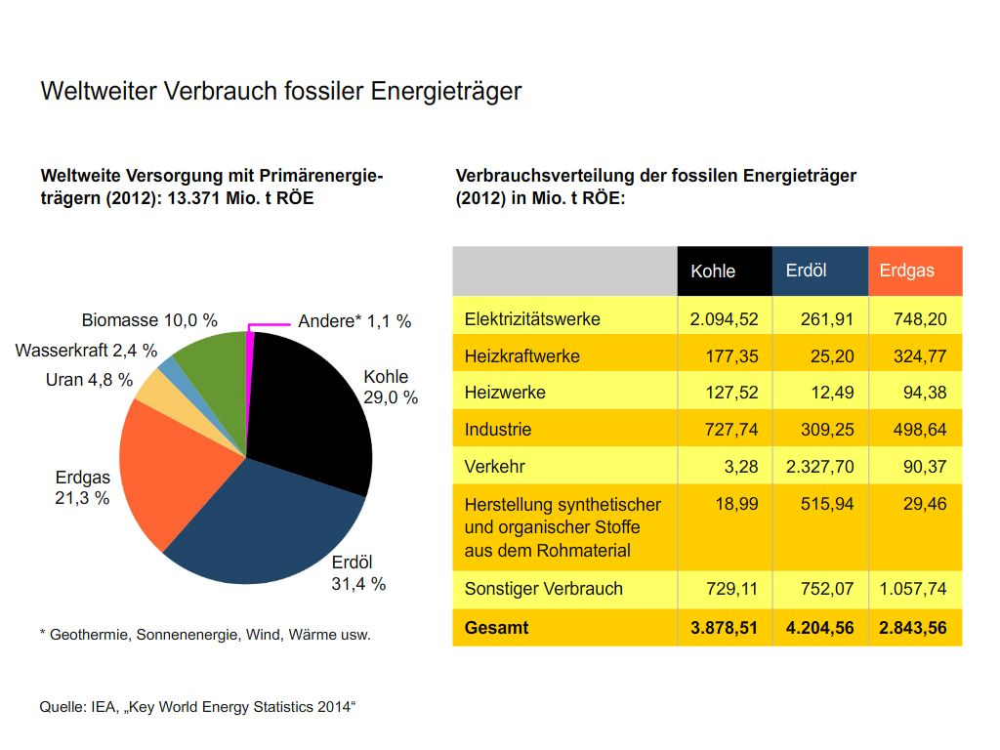
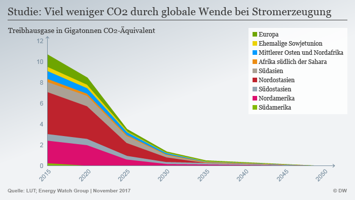

Fossile Brennstoffe
Fossile Brennstoffe sind einer der größten probleme der Menschheit. Der gebrauch von ihnen setzt ,schon vor langer Zeit verfestigtes, CO2 frei das den Treibhaus effekt antreibt und somit die Erde immer weiter erhitzt. Das hier ist eine Tabelle die zeigt wie Fossile Brennstoffe im Jahre 2012 verwendet wurden:  Die Klimaerhitzung darf nicht über +1,5°C kommen, denn dann wird eine Kettenreaktion eintreten die den Klimawandel und somit die zerstörung vieler Orte durch Naturgewalten unstoppbar macht. Es hat sich aber gebessert und in vielen Ländern hat auch das Pariser Klimaabkommen geholfen. Hier kann man auch die Verbesserung bzw. Zukünftig erwartete Verbesserung im bereich des CO2 austoßes sehen: 
Es ist also auf Verbesserung weitere zu hoffen.